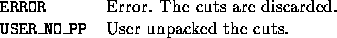

Back to SYMPHONY Home Page
Back to SYMPHONY Home Page
Next: user_send_lp_solution
Up: User-written functions of the
Previous: user_same_cuts
int user_unpack_cuts(void *user, int from, int one_row_only, int varnum,
var_desc **vars, int cutnum, cut_data **cuts,
int *new_row_num, waiting_row ***new_rows)
- Description:
-
The user has to interpret the given cuts as constraints for the
current LP relaxation, i.e., he must decode the compact representation
of the cuts (see the cut_data structure) into
rows for the matrix. A pointer to the array of generated rows must be
returned in ***new_rows (the user has to allocate this array)
and their number in *new_row_num.
There is no post processing. There are no built-in default options.
- Arguments:
-

- Return values:
-

- Wrapper invoked from:
- Wherever a cut needs to be unpacked
(multiple places).
- Notes:
-
- When decoding the cuts, the expanded constraints have to be adjusted to
the current LP, i.e., coefficients corresponding to variables currently not in
the LP have to be left out.
- If the one_row_only flag is set to
UNPACK_CUTS_MULTIPLE, then the user can generate as many
constraints (even zero!) from a cut as she wants (this way she can
lift the cuts, thus adjusting them for the current LP).
However, if the flag is set to UNPACK_CUTS_SINGLE, then for
each cut the user must generate a unique row, the same one that had
been generated from the cut before. (The flag is set to this value
only when regenerating a search tree node.)
- The from argument can take on six different values:
CUT_FROM_CG, CUT_FROM_CP, CUT_FROM_TM,
CUT_LEFTOVER (these are cuts from a previous LP relaxation that are
still in the local pool), CUT_NOT_IN_MATRIX_SLACK and
CUT_VIOLATED_SLACK indicating where the cut came from. This might
be useful in deciding whether to lift the cut or not.
- The matind fields of the rows must be filled with indices with
respect to the position of the variables in **vars.
- Warning: For each row, the user must make sure that the
cut the row was generated from (and can be uniquely regenerated from
if needed later) is safely stored in the
waiting_row structure. SYMPHONY will free the entries in
cuts after this function returns. If a row is generated from a
cut in cuts (and not from a lifted cut), the user has the option
of physically copying the cut into the corresponding part of the
waiting_row structure, or copying the
pointer to the cut into the waiting_row
structure and erasing the pointer in cuts. If a row is generated
from a lifted cut, the user should store a copy of the lifted cut in
the corresponding part of waiting_row.
Next: user_send_lp_solution
Up: User-written functions of the
Previous: user_same_cuts
Ted Ralphs
Fri Feb 11 13:47:59 CST 2000